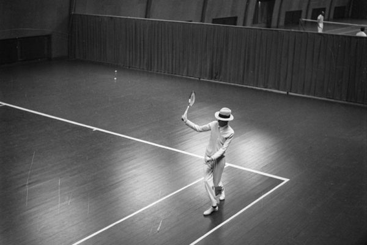

Tennis är en levande idrott för livet – hela livet. Tennissporten engagerar såväl ung som gammal genom hela livet, både på och utanför banan, och är dessutom en av de bästa idrotterna för din hälsa.
I dag är det många som upptäckt tjusningen med tennis och hur roligt det är att spela. Omkring 350-400 000 personer utövar tennis mer eller mindre regelbundet i Sverige. En klar majoritet av dessa spelar för motionens skull och för att må bra. Tennis lämpar sig väl för alla åldersgrupper och spelstyrkor. Det är en utmärkt familjesport som passar lika bra för både män och kvinnor, unga som gamla. Det finns över 400 tennisklubbar och ett rikt utbud av kommunala banor och sommaranläggningar runtom i landet.
Den moderna formen av tennis, som långt in på 1900-talet benämndes lawn tennis, kom till Sverige redan 1879. Reglerna till den nya sporten hade patenterats 1874. En stor anledning till tennisens snabba intåg i Sverige var kronprins Gustaf, sedermera Gustav V. ”Mr G”, som han kom att kallas i tennissammanhang, hade upptäckt tennisen under sin Englandsresa mot slutet av 1870-talet. Han bidrog starkt till tennisens starka utveckling i landet och för sina gärningar blev han den första svensk som invaldes i International Tennis Hall of Fame 1980.